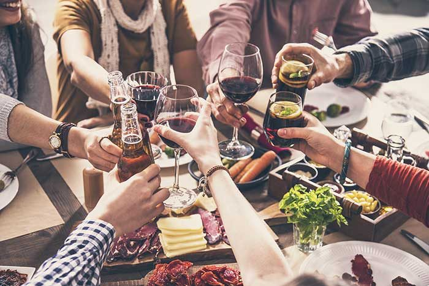
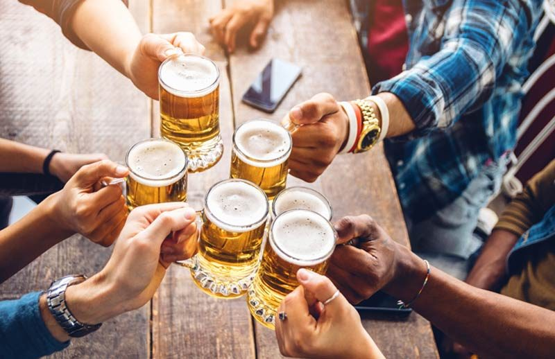
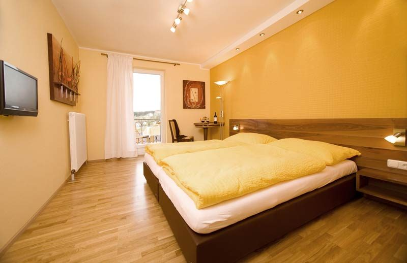

Urlaub im Innviertel
Die ideale Lage von Münzkirchen macht uns zum perfekten Ort zum Einkehren – und zum Ausgangspunkt für Ihren Ausflug.
Reisegruppen herzlich willkommen
Sehr geehrte Reiseveranstalterin, sehr geehrter Reiseveranstalter: Genießen Sie mit Ihrer Reisegruppe die herzliche Innviertler Gastfreundschaft im Gasthof Wösner.
Natürlich stehen Ihnen und Ihrer Reisegruppe alle Annehmlichkeiten unseres Hauses zur Verfügung. Unsere Räumlichkeiten eignen sich hervorragend für Busgruppen – in jeder Größe: Hopfengartl (120 Personen), Restaurant (130 Personen), Gaststube & Kaminstüberl (68 Personen) oder die Wösner Tenne (von 64 bis 450 Personen).
Besuchen Sie uns zum Frühstück, zur Brotzeit, zum Mittagessen, Nachmittagskaffee oder zum Abendessen. Gerne senden wir Ihnen ein individuelles, saisonales Speisenangebot zur Vorbestellung.
P. S.: Parkplatz für zwei Reisebusse ist vor dem Gasthof Wösner vorhanden.
Einstieg direkt im Gasthof
Erkunden und entdecken Sie die Gänge und verschiedenen Ebenen des jahrhundertealten Erdstalls. Durch eine Bodenöffnung im Keller des Gasthofes gelangt man in die Unterwelt – ein Erlebnis für die ganze Familie.
1899 das erste Mal erwähnt, dürfte der Erdstollen früher als Erdstall genützt worden sein. Er ist heute noch in halbwegs ursprünglichem Zustand zu besichtigen. Die hohe Schlupfhöhe beweist, dass die Erbauer keine kleinwüchsigen Personen waren.
Führungen nach Voranmeldung – Tel. +43 7716 7240
Der Erdstall in Zahlen
Grenzenloser Freizeitgenuss
Hier können Sie nach Lust und Laune durch die Wälder wandern und die Natur genießen, „Kultur pur“ entdecken und Sport und Spaß mit der Familie erleben. Und anschließend gönnen Sie sich eine „zünftige Jaus’n“ im Gasthof Wösner.
IKUNA Naturresort in Natternbach
Neben Spiel, Spaß und Action kann man hier die Natur erleben und mit allen Sinnen spüren. Schon beim Betreten des Parks und beim Anblick auf das 200.000 m² große Areal mit über 90 Spielstationen kommen Groß, aber vor allem Klein gar nicht mehr aus dem Staunen raus.
Speziell für unsere Nächtigungsgäste haben wir einen Rabattcode für ermäßigten Eintritt.
Baumkronenweg in Kopfing
Europas einzigartiger und aufregendster Themenweg ist ein Erlebnis für die ganze Familie. Der 2005 eröffnete Themenweg besteht aus 17 Türmen, die zwischen 3 und 22 m hoch sind, verbunden mit wuchtigen Holzstegen und auch herausfordernden Hängebrücken. Er lädt zum Wandern in luftigen Höhen ein.
Weitere sehenswerte Ausflugsziele in Oberösterreich und im Innviertel
- Dreiflüssestadt Passau mit Veste Oberhaus
- Barockstadt Schärding
- Stift Reichersberg
- Stift Engelhartszell
- Waldhochseilgarten mit Sommerrodelbahn und „Weg der Sinne“ in Haag am Hausruck
- Forellenzirkus in St. Ägidi
- Fatimaheiligtum Schardenberg
- Schifffahrt am Inn oder auf der Donau
- Donauradweg
- Innradweg



